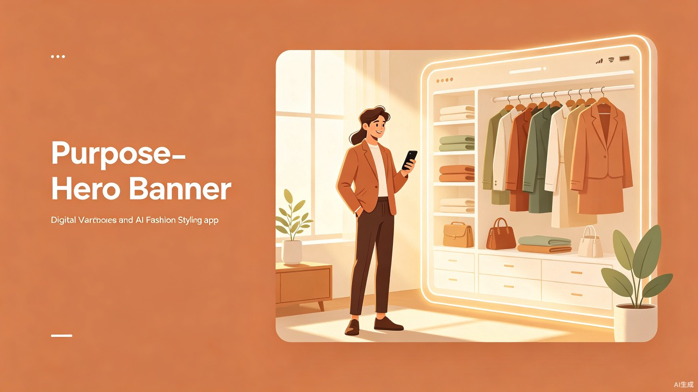

人们早上起来经常要考虑今天穿什么，要关注到节气、天气、去什么地方、做什么事、见什么人等多方面因素，而且现在的人们衣服太多、衣柜太满，大多时候不能主动记起自己还有什么衣服，也经常因为流行趋势的变化不确定应该怎样搭配。
而现在时代所谓的穿搭真正不在于好不好，而在于是否自洽——自己舒服、满意、自信，这将更有助于每天不同的生活和工作状态。
另一方面，现在的服装购物体验基本都是个人去找款，在AI时代个人的模样体型数据能够做到精细化和可视化的基础上，购物体验也应转变为服装找人，解决供给侧和需求侧的匹配效率问题，同时帮助供应链及时获得流行元素和消费需求，解决供给侧过剩问题和有助于柔性供应链。
APP，三个主要功能：我的数字衣柜、智能穿搭顾问、穿搭分享社区。
一键拍图即可收录我所有的衣服，所有衣服都完整可视化地展示在衣柜页面，还能推荐我购入新衣服和其他饰品。
每天早上结合天气与日程等诸多因素为我推荐可视化今日穿搭，告诉我这样穿搭的依据，使我更加自信和自洽。
用户可以分享OOTD照片到社区，用户之间可以收藏、点赞、评论，发现和自己体型风格相近的人怎么穿。
主要面向20-40岁青年白领群体，每天需要出门见人、注重个人形象，但时间有限、不想在穿搭上花太多心思。
定位陪伴式自洽穿搭顾问可以带来多方面商业价值，如穿搭类商品推荐成交、穿搭数据反馈供应链提效等。积累的穿搭偏好数据也能反向反馈给供应链，帮助品牌和工厂更精准地理解"真实的人需要什么"，减少过剩生产，提升柔性供应链的响应效率。
满足用户情绪价值，增强自信气质，助于每天生活工作开心愉悦。穿搭的核心不是"好看给别人看"，而是"自己觉得舒服和自信"。一个让人每天出门时都感觉"今天这样挺好"的工具，其实是在帮用户积累一种稳定的日常好心情。